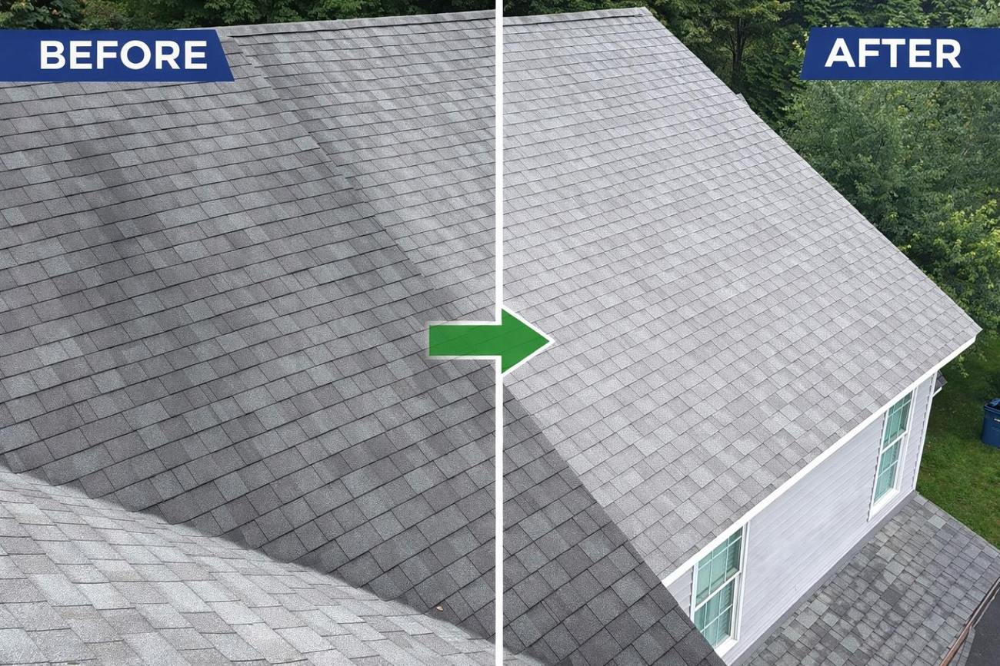
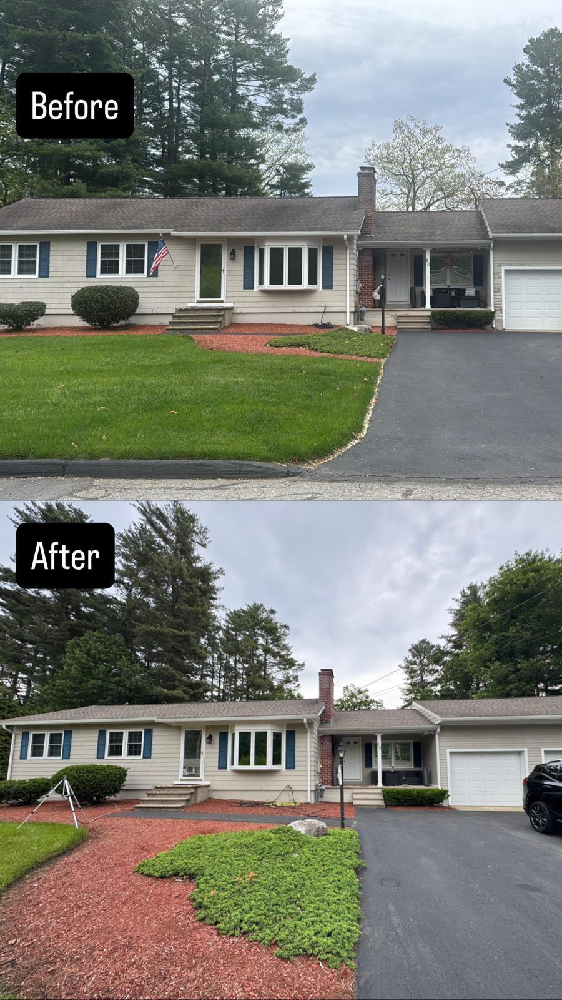
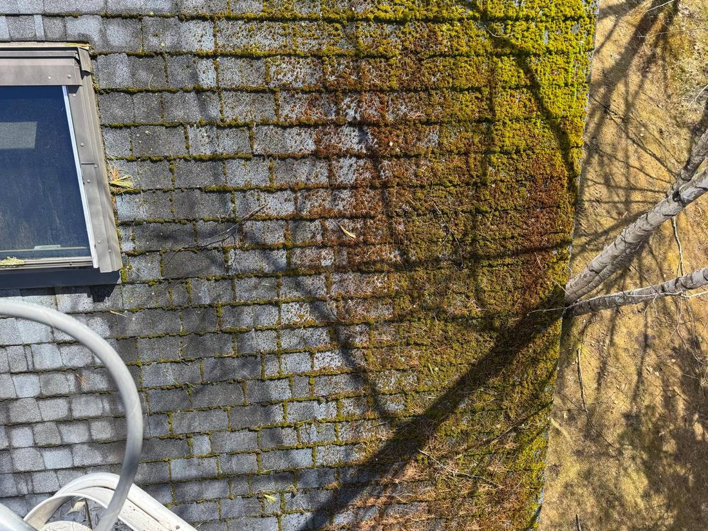
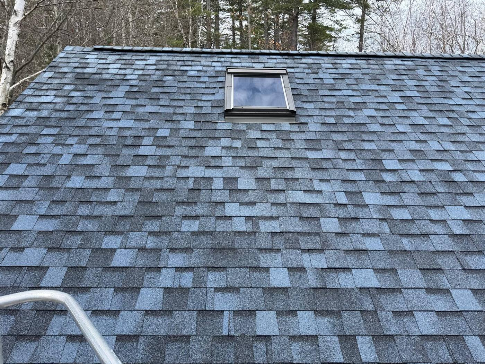
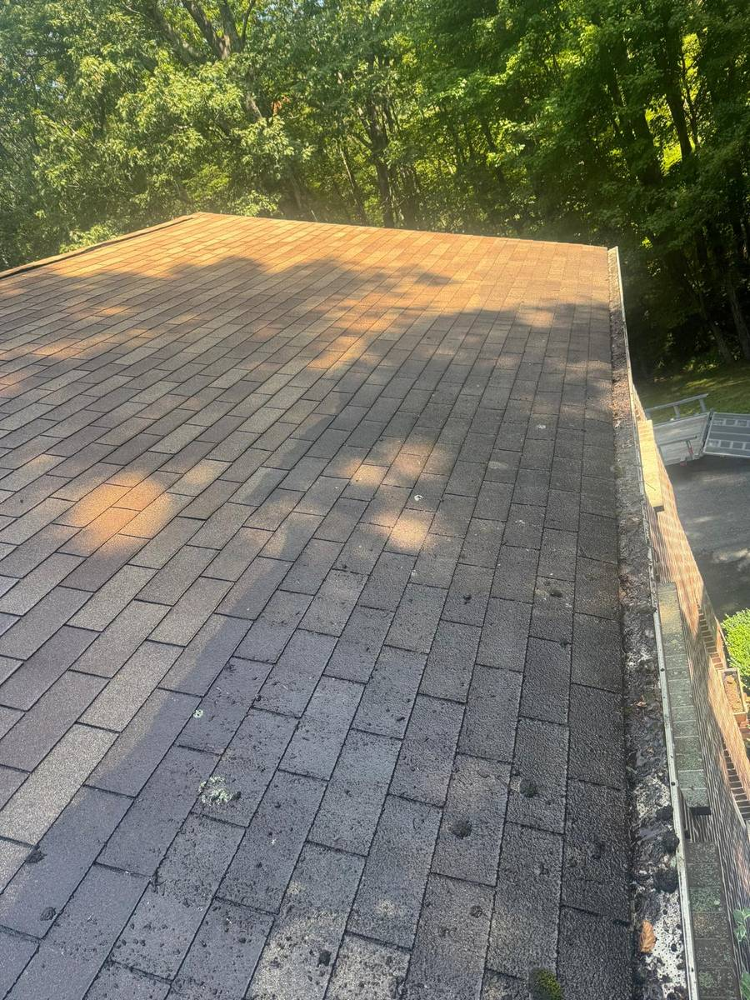
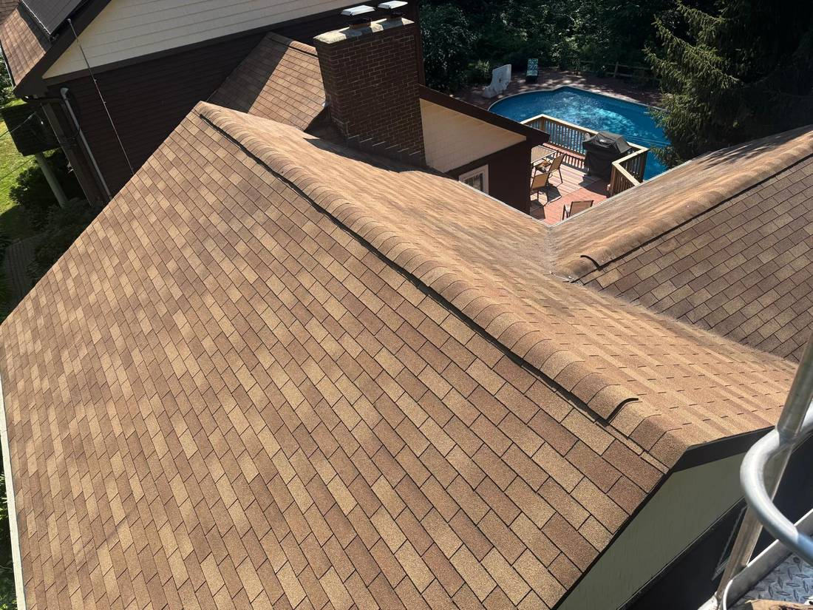
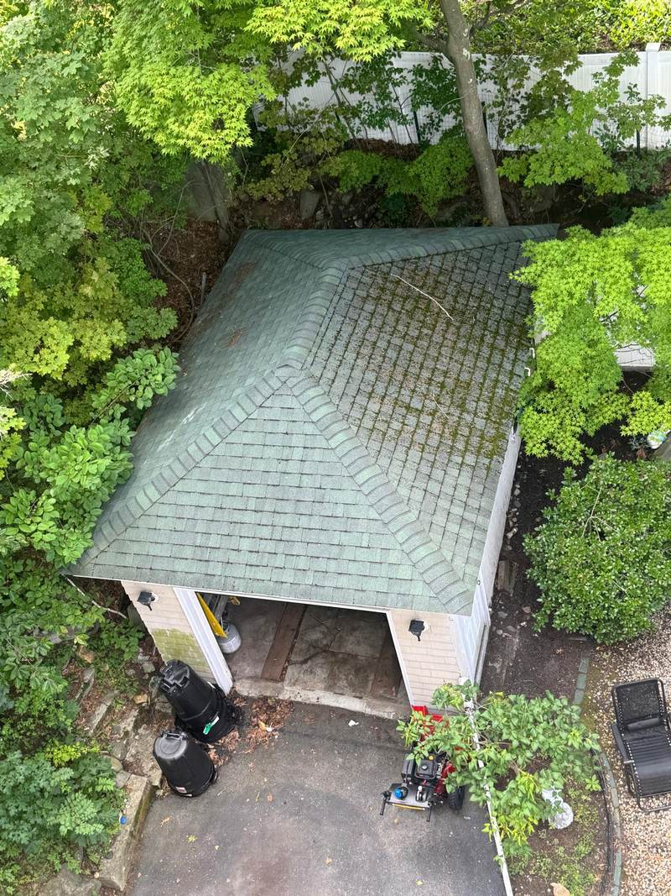
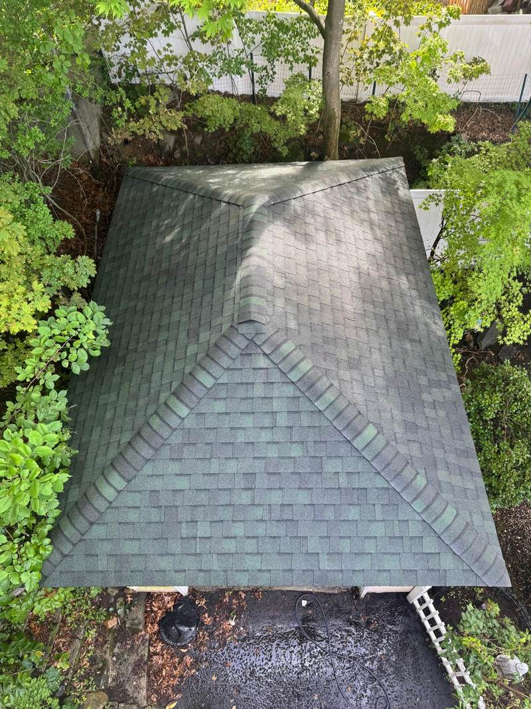
.
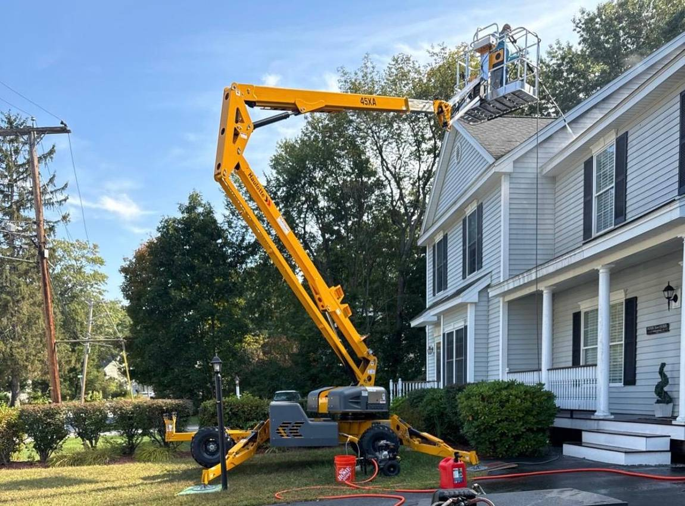
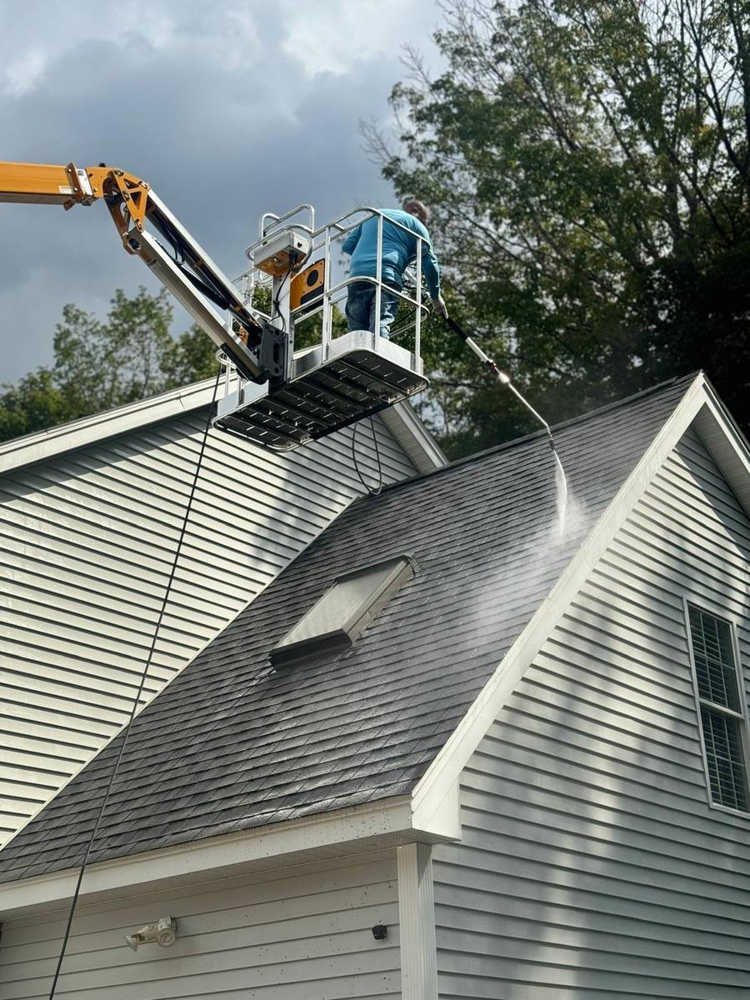
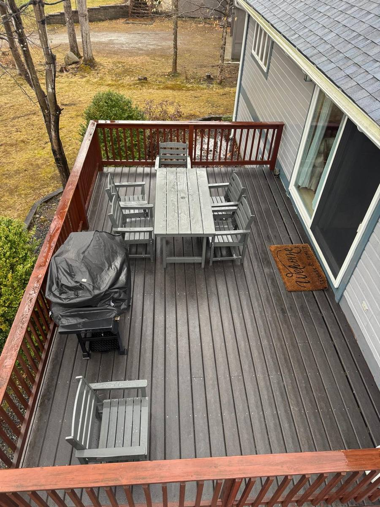
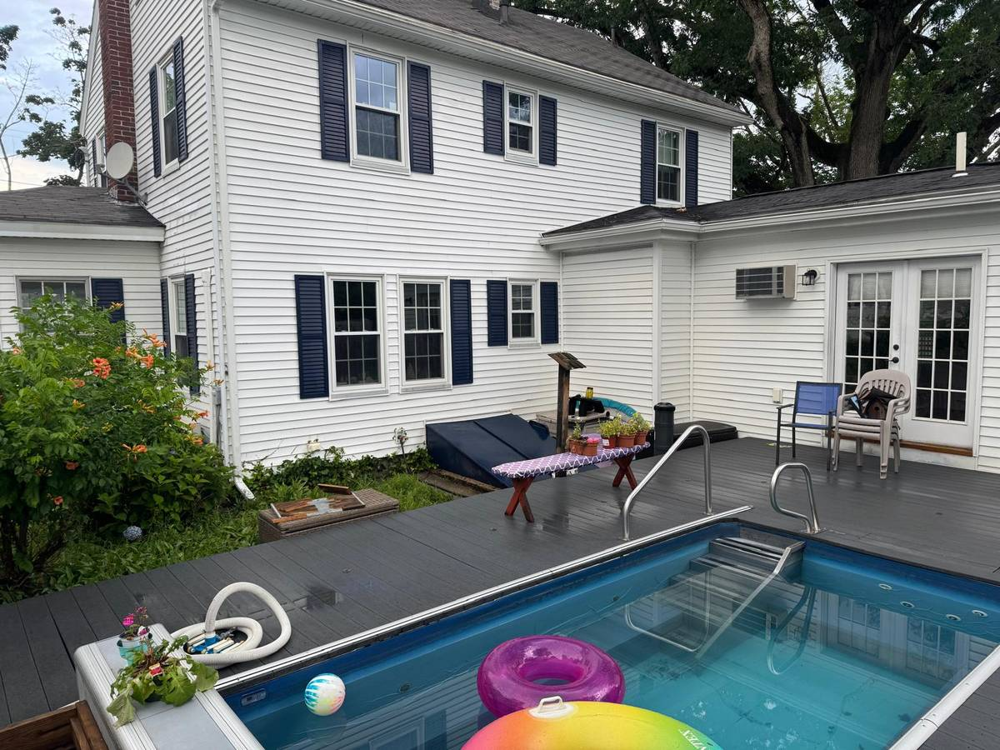
Aproofclean@gmail.com.
![AP Exterior Cleaning]()